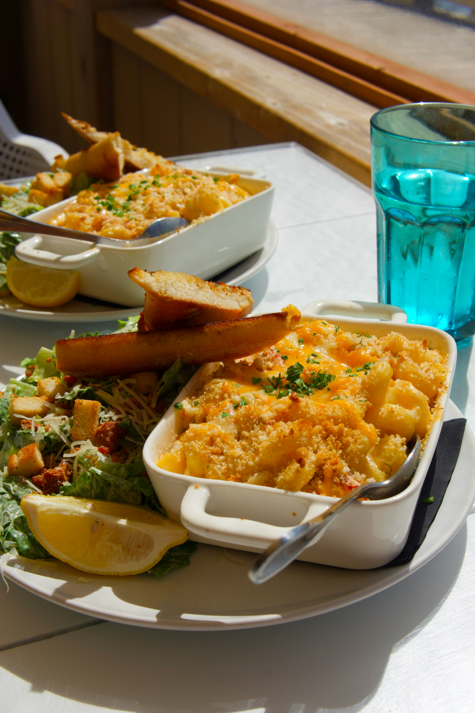

Macaroni and Cheese

Description
Quick, easy, and tasty macaroni and cheese dish. Fancy, designer mac and cheese often costs forty or fifty dollars to prepare when you have so many expensive cheeses, but they aren’t always the best tasting. This simple recipe is cheap and tasty.
Ingredients
- 1 (8 ounce) box elbow macaroni
- ¼ cup butter
- ¼ cup all-purpose flour
- ½ teaspoon salt
- 1 teaspoon garlic salt
- ground black pepper to taste
- 2 cups milk
- 2 cups shredded Cheddar cheese
Steps
- Gather the ingredients.
- Bring a large pot of lightly salted water to a boil. Cook elbow macaroni in the boiling water, stirring occasionally until tender yet firm to the bite, about 8 minutes.
- Meanwhile, melt butter in a saucepan over medium heat.
- Whisk in flour, salt, and black pepper until smooth, about 5 minutes.
- Slowly pour in milk, while constantly stirring; cook and stir until mixture is smooth and bubbling, about 5 minutes, making sure the milk doesn’t burn.
- Add Cheddar cheese and stir until melted, 2 to 4 minutes.
- Drain macaroni and fold into cheese sauce until coated.
- Serve hot and enjoy!
Home